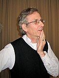
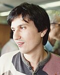
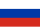
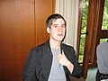
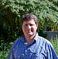
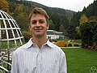
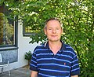
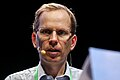
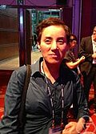
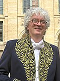

| Breakthrough Prize in Mathematics | |
|---|---|
| Description | Significant discoveries in any branch of mathematics |
| Location | Various (recently Los Angeles, California) |
| Country | International |
| Presented by | Breakthrough Prize Board |
| Reward | US$3 million |
| Status | Active |
| Website | breakthroughprize |
The Breakthrough Prize in Mathematics is an annual award of the Breakthrough Prize series announced in 2013.
It is supported by foundations co-founded by Julia and Yuri Milner,[1] Mark Zuckerberg and others.[2] The annual award comes with a cash gift of $3 million. The Breakthrough Prize Board also selects up to three laureates for the New Horizons in Mathematics Prize, which awards $100,000 to early-career researchers. Starting in 2021 (prizes announced in September 2020), the $50,000 Maryam Mirzakhani New Frontiers Prize is also awarded to a number of women mathematicians who have completed their PhDs within the past two years.
Motivation
The founders of the prize have stated that they want to help scientists to be perceived as celebrities again, and to reverse a 50-year "downward trend".[3] They hope that this may make "more young students aspire to be scientists".[3]
Laureates
| Year | Portrait | Laureate (birth/death) |
Country | Rationale | Affiliation |
|---|---|---|---|---|---|
| 2015[4] |  |
Simon Donaldson (b. 1957) |
United Kingdom | "for the new revolutionary invariants of 4-dimensional manifolds and for the study of the relation between stability in algebraic geometry and in global differential geometry, both for bundles and for Fano varieties."[5] | Stony Brook University Imperial College London |
 |
Maxim Kontsevich (b. 1964) |
 Russia |
"for work making a deep impact in a vast variety of mathematical disciplines, including algebraic geometry, deformation theory, symplectic topology, homological algebra and dynamical systems."[6] | Institut des Hautes Études Scientifiques | |
 |
Jacob Lurie (b. 1977) |
"for his work on the foundations of higher category theory and derived algebraic geometry; for the classification of fully extended topological quantum field theories; and for providing a moduli-theoretic interpretation of elliptic cohomology."[7] | Harvard University | ||
| Terence Tao (b. 1975) |
"for numerous breakthrough contributions to harmonic analysis, combinatorics, partial differential equations and analytic number theory."[8] | University of California, Los Angeles | |||
.jpg)
|
Richard Taylor (b. 1962) |
United Kingdom |
"for numerous breakthrough results in the theory of automorphic forms, including the Taniyama–Weil conjecture, the local Langlands conjecture for general linear groups, and the Sato–Tate conjecture."[9] | Institute for Advanced Study | |
| 2016 |  |
Ian Agol (b. 1970) |
"for spectacular contributions to low dimensional topology and geometric group theory, including work on the solutions of the tameness, virtually Haken and virtual fibering conjectures."[10][11] | University of California, Berkeley Institute for Advanced Study | |
| 2017 | .jpg)
|
Jean Bourgain (1954–2018) |
Belgium | "for multiple transformative contributions to analysis, combinatorics, partial differential equations, high-dimensional geometry and number theory."[12] | Institute for Advanced Study |
| 2018 |  |
Christopher Hacon (b. 1970) |
United Kingdom |
"for transformational contributions to birational algebraic geometry, especially to the minimal model program in all dimensions."[13][14] | University of Utah |
 |
James McKernan (b. 1964) |
United Kingdom | University of California, San Diego | ||
| 2019 |  |
Vincent Lafforgue (b. 1974) |
"for ground breaking contributions to several areas of mathematics, in particular to the Langlands program in the function field case."[15] | Centre National de la Recherche Scientifique Institut Fourier, Université Grenoble-Alpes | |
| 2020 | Alex Eskin (b. 1965) |
"for revolutionary discoveries in the dynamics and geometry of moduli spaces of Abelian differentials, including the proof of the 'magic wand theorem'."[16] | University of Chicago | ||
 |
Maryam Mirzakhani (1977–2017) (posthumously awarded) |
Iran |
Stanford University | ||
| 2021 | Martin Hairer (b. 1975) |
Austria United Kingdom |
"for transformative contributions to the theory of stochastic analysis, particularly the theory of regularity structures in stochastic partial differential equations."[17][18] | Imperial College London | |
| 2022 | Takurō Mochizuki (b. 1972) |
"for monumental work leading to a breakthrough in our understanding of the theory of bundles with flat connections over algebraic varieties, including the case of irregular singularities."[19] | Kyoto University | ||
| 2023 | Daniel Spielman (b. 1970) |
"for breakthrough contributions to theoretical computer science and mathematics, including to spectral graph theory, the Kadison-Singer problem, numerical linear algebra, optimization, and coding theory."[20] | Yale University | ||
| 2024 | Simon Brendle
(b. 1981) |
"for transformative contributions to differential geometry, including sharp geometric inequalities, many results on Ricci flow and mean curvature flow and the Lawson conjecture on minimal tori in the 3-sphere."[21] | Columbia University | ||
| 2025 | Dennis Gaitsgory
(b. 1973) |
Israel |
"for his central role in the proof of the geometric Langlands conjecture."[22] | Max Planck Institute for Mathematics | |
| 2026 |  |
Frank Merle
(b. 1962) |
"for breakthroughs in nonlinear evolution equations, with regards to their stability, singularity formation, or resolution into solitons."[23] | CY Cergy Paris University and Institut des Hautes Études Scientifiques |
{kind=link}
.jpg){kind=link}
{kind=link}
{kind=link}
{kind=link}
{kind=link}
{kind=link}
{kind=link}
{kind=link}
{kind=link}
{kind=link}
{kind=link}
{kind=link}
{kind=link}
New Horizons in Mathematics Prize
The past laureates of the New Horizons in Mathematics prize are:[24]
- 2016
- André Arroja Neves – "For outstanding contributions to several areas of differential geometry, including work on scalar curvature, geometric flows, and his solution with Fernando Codá Marques of the 50-year-old Willmore Conjecture."
- Larry Guth – "For ingenious and surprising solutions to long standing open problems in symplectic geometry, Riemannian geometry, harmonic analysis, and combinatorial geometry."
- (prize was rejected by Peter Scholze)[25]
- 2017
- Geordie Williamson – "For pioneering work in geometric representation theory, including the development of Hodge theory for Soergel bimodules and the proof of the Kazhdan-Lusztig conjectures for general Coxeter groups."
- Benjamin Elias – "For pioneering work in geometric representation theory, including the development of Hodge theory for Soergel bimodules and the proof of the Kazhdan-Lusztig conjectures for general Coxeter groups."
- Hugo Duminil-Copin – "For brilliant solutions to multiple landmark problems in probability, particularly regarding critical phenomena for Ising-type models."
- Mohammed Abouzaid – "For distinguishing cotangent bundles of exotic spheres, constructing the wrapped Fukaya category with Paul Seidel, and other decisive contributions to symplectic topology and mirror symmetry."
- 2018
- Zhiwei Yun – "For deep work on the global Gan-Gross-Prasad conjecture and the discovery of geometric interpretations for the higher derivatives of L-functions in the function field case."
- Wei Zhang – "For deep work on the global Gan-Gross-Prasad conjecture and the discovery of geometric interpretations for the higher derivatives of L-functions in the function field case."
- Maryna Viazovska – "For remarkable application of the theory of modular forms to the sphere packing problem in special dimensions."
- Aaron Naber – "For work in geometric analysis and Riemannian geometry, introducing powerful new techniques to solve outstanding problems, particularly for manifolds with Ricci curvature bounds."
- 2019
- Chenyang Xu – "For major advances in the minimal model program and applications to the moduli of algebraic varieties."
- Karim Adiprasito – "For the development, with Eric Katz, of combinatorial Hodge theory leading to the resolution of the log-concavity conjecture of Rota."
- June Huh – "For the development, with Eric Katz, of combinatorial Hodge theory leading to the resolution of the log-concavity conjecture of Rota."
- Kaisa Matomäki – "For fundamental breakthroughs in the understanding of local correlations of values of multiplicative functions."
- Maksym Radziwill – "For fundamental breakthroughs in the understanding of local correlations of values of multiplicative functions."
- 2020
- Tim Austin – "For multiple contributions to ergodic theory, most notably the solution of the weak Pinsker conjecture."
- Emmy Murphy – "For contributions to symplectic and contact geometry, in particular the introduction of notions of loose Legendrian submanifolds and, with Matthew Strom Borman and Yakov Eliashberg, overtwisted contact structures in higher dimensions."
- Xinwen Zhu – "For work in arithmetic algebraic geometry including applications to the theory of Shimura varieties and the Riemann-Hilbert problem for p-adic varieties."
- 2021
- Bhargav Bhatt – "For outstanding work in commutative algebra and arithmetic algebraic geometry, particularly on the development of p-adic cohomology theories."
- Aleksandr Logunov – "For novel techniques to study solutions to elliptic equations, and their application to long-standing problems in nodal geometry."
- Song Sun – "For many groundbreaking contributions to complex differential geometry, including existence results for Kähler–Einstein metrics and connections with moduli questions and singularities."
- 2022
- Aaron Brown and Sebastián Hurtado-Salazar – "For contributions to the proof of Zimmer's conjecture."
- Jack Thorne – "For transformative contributions to diverse areas of algebraic number theory, and in particular for the proof, in collaboration with James Newton, of the automorphy of all symmetric powers of a holomorphic modular newform."
- Jacob Tsimerman – "For outstanding work in analytic number theory and arithmetic geometry, including breakthroughs on the André–Oort and Griffiths conjecture
- 2023
- Ana Caraiani – "For diverse transformative contributions to the Langlands program, and in particular for work with Peter Scholze on the Hodge-Tate period map for Shimura varieties and its applications."
- Ronen Eldan – "For the creation of the stochastic localization method, that has led to significant progress in several open problems in high-dimensional geometry and probability, including Jean Bourgain's slicing problem and the KLS conjecture."
- James Maynard – "For multiple contributions to analytic number theory, and in particular to the distribution of prime numbers."
- 2024[21]
- Roland Bauerschmidt, New York University – "For outstanding contributions to probability theory and the development of renormalisation group techniques."
- Michael Groechenig, University of Toronto – "For contributions to the theory of rigid local systems and applications of p-adic integration to mirror symmetry and the fundamental lemma."
- Angkana Rüland, University of Bonn – "For contributions to applied analysis, in particular the analysis of microstructure in solid-solid phase transitions and the theory of inverse problems."
- 2025[22]
- Ewain Gwynne, University of Chicago – "for his work in conformal probability, which studies probabilistic objects such as random curves and surfaces."
- John Pardon, Stony Brook University – "for his producing a number of important results in geometry and topology, particularly in the field of symplectic geometry and pseudo-holomorphic curve, which are certain types of smooth surfaces in manifolds."
- Sam Raskin, Yale University – "for his playing a significant role in the major recent progress on the geometric Langlands program, including the final proof of the geometric Langlands conjecture in characteristic zero."
- 2026[26]
- Otis Chodosh, Stanford University – "For contributions to differential geometry and the calculus of variations, including work on minimal surfaces and manifolds with positive scalar curvature."
- Hong Wang, Institut des Hautes Études Scientifiques and New York University – "For work in harmonic analysis, partial differential equations, and geometric measure theory, including the local smoothing conjecture, Furstenberg set conjecture, and the Kakeya conjecture."
- Vesselin Dimitrov, Caltech, and Yunqing Tang, University of California, Berkeley – "For work in Diophantine geometry, including the proof of the Atkin-Swinnerton-Dyer unbounded denominators conjecture and new irrationality results for special values of Dirichlet L-series (both joint with Frank Calegari)."
Maryam Mirzakhani New Frontiers Prize
The Maryam Mirzakhani New Frontiers Prize, in honour of Iranian mathematician Maryam Mirzakhani, is presented to female mathematicians who have completed their PhDs within the previous two years.[27]
- 2021
- Nina Holden – "For work in random geometry, particularly on Liouville quantum gravity as a scaling limit of random triangulations."
- Urmila Mahadev – "For work that addresses the fundamental question of verifying the output of a quantum computation."
- Lisa Piccirillo – "For resolving the classic problem that the Conway knot is not smoothly slice."
- 2022
- Sarah Peluse – "For contributions to arithmetic combinatorics and analytic number theory, particularly with regards to polynomial patterns in dense sets."
- Hong Wang – "For advances on the restriction conjecture, the local smoothing conjecture, and related problems."
- Yilin Wang – "For innovative and far-reaching work on the Loewner energy of planar curves."
- 2023
- Maggie Miller – "For work on fibered ribbon knots and surfaces in 4-dimensional manifolds."
- Jinyoung Park – "For contributions to the resolution of several major conjectures on thresholds and selector processes."
- Vera Traub – "For advances in approximation results in classical combinatorial optimization problems, including the traveling salesman problem and network design."
- 2024[21]
- Hannah Larson, University of California, Berkeley (PhD Stanford University 2022) – "For advances in Brill-Noether theory and the geometry of the moduli space of curves."
- Laura Monk, University of Bristol (PhD University of Strasbourg 2021) – "For advancing our understanding of random hyperbolic surfaces of large genus."
- Mayuko Yamashita, Kyoto University (PhD University of Tokyo 2022) – "For contributions to mathematical physics, index theory."
- 2025[22]
- Si Ying Lee, Stanford University (PhD Harvard University 2022) – "For her finding a new approach to an important problem in the Langlands program and succeeding in reducing it to a local problem."
- Rajula Srivastava, University of Bonn and the Max Planck Institute for Mathematics (PhD University of Wisconsin-Madison 2022) – "For her making a progress in a challenging area at the intersection of harmonic analysis and number theory by focusing on bounding the number of lattice points one can find near a given smooth surface, with important applications to Diophantine approximation in higher dimensions."
- Ewin Tang, University of California, Berkeley (PhD University of Washington 2023) – "For her inventing quantum computing algorithms for machine learning, and proving that certain calculations, which quantum algorithms were widely considered to be exponentially faster at solving, can actually be solved in comparable time by a normal (non-quantum) computer."
- 2026[28]
- Amanda Hirschi, IMJ-PRG, Sorbonne Université (PhD University of Cambridge 2023) – "For contributions to symplectic topology."
- Anna Skorobogatova, Clay Research Fellow and ETH Zürich (PhD Princeton University 2024) – "For contributions to geometric measure theory."
- Mingjia Zhang, Princeton University and Institute for Advanced Study (PhD University of Bonn 2023) – "For contributions to the theory of Shimura varieties."
See also
- Breakthrough Prize in Life Sciences
- Breakthrough Prize in Fundamental Physics
- List of mathematics awards
Notes
- ^ "Yuri Milner | Technology Investor & Science Philanthropist". www.yurimilner.com.
- ^ Overbye, Dennis (14 December 2013). "$3 Million Prizes Will Go to Mathematicians, Too". The New York Times. Retrieved 14 August 2018.
- ^ a b Markoff, John (10 November 2015). "Breakthrough Prize Looks to Stars to Shine on Science". The New York Times. Retrieved 14 August 2018.
Yuri Milner: 'We peaked 50 years ago and it has been a downward slope since then.'
- ^ Chang, Kenneth (23 June 2014). "The Multimillion-Dollar Minds of 5 Mathematical Masters". The New York Times. Retrieved 14 August 2018.
- ^ "Mathematics Breakthrough Prize > Laureates > Simon Donaldson". Archived from the original on 2014-11-01. Retrieved 2014-06-24.
- ^ "Mathematics Breakthrough Prize > Laureates > Maxim Kontsevich". Archived from the original on 2014-11-01. Retrieved 2014-06-24.
- ^ "Mathematics Breakthrough Prize > Laureates > Jacob Lurie". Archived from the original on 2014-11-01. Retrieved 2014-06-24.
- ^ "Mathematics Breakthrough Prize > Laureates > Terence Tao". Archived from the original on 2014-11-01. Retrieved 2014-06-24.
- ^ "Mathematics Breakthrough Prize > Laureates > Richard Taylor".
- ^ The New York Times (6 November 2015). "Breakthrough Prizes Give Top Scientists the Rock Star Treatment". The New York Times. Retrieved 14 August 2018.
- ^ "Breakthrough Prize – Mathematics Breakthrough Prize Laureates – Ian Agol". breakthroughprize.org.
- ^ "Breakthrough Prize – Breakthrough Prize Marks 5th Anniversary Celebrating Top Achievements In Science And Awards More Than $25 Million In Prizes At Gala Ceremony In Silicon Valley". breakthroughprize.org.
- ^ "Breakthrough Prize – Mathematics Breakthrough Prize Laureates – Christopher Hacon". breakthroughprize.org.
- ^ "Breakthrough Prize – Mathematics Breakthrough Prize Laureates – James McKernan". breakthroughprize.org.
- ^ "Breakthrough Prize – Winners of the 2019 Breakthrough Prize in Life Sciences, Fundamental Physics and Mathematics Announced". breakthroughprize.org.
- ^ "Breakthrough Prize – Winners Of The 2020 Breakthrough Prize In Life Sciences, Fundamental Physics And Mathematics Announced". breakthroughprize.org.
- ^ "Breakthrough Prize – Winners Of The 2021 Breakthrough Prizes In Life Sciences, Fundamental Physics And Mathematics Announced". breakthroughprize.org.
- ^ Sample, Ian, ed. (September 10, 2020). "UK mathematician wins richest prize in academia". The Guardian – via www.theguardian.com.
- ^ "Breakthrough Prize – Winners Of The 20212 Breakthrough Prizes In Life Sciences, Fundamental Physics And Mathematics Announced". breakthroughprize.org. Retrieved 9 September 2021.
- ^ "Breakthrough Prize – Winners Of The 2023 Breakthrough Prizes In Life Sciences, Mathematics And Fundamental Physics Announced". breakthroughprize.org. Retrieved 2022-09-22.
- ^ a b c "BREAKTHROUGH PRIZE ANNOUNCES 2024 LAUREATES IN LIFE SCIENCES, FUNDAMENTAL PHYSICS, AND MATHEMATICS". BREAKTHROUGH PRIZE. September 14, 2023. Retrieved September 14, 2023.
- ^ a b c "Breakthrough Prize Announces 2025 Laureates in Life Sciences, Fundamental Physics, and Mathematics". News. Breakthrough Prize. April 5, 2025. Archived from the original on April 6, 2025. Retrieved April 6, 2025.
- ^ Laureate 2026
- ^ "Breakthrough Prize – Mathematics Breakthrough Prize – Laureates". breakthroughprize.org.
- ^ Sample, Ian (2015-11-09). "Academics land £2m prizes at Zuckerberg-backed 'science Oscars'". The Guardian. ISSN 0261-3077. Retrieved 2025-05-07.
- ^ "Breakthrough Prize Announces 2026 Laureates". Breakthrough Prize. Retrieved 2026-05-23.
- ^ "Breakthrough Prize – Mathematics Breakthrough Prize – Prizes". breakthroughprize.org. Retrieved 2025-12-19.
- ^ Maryam Mirzakhani New Frontiers Prize 2026